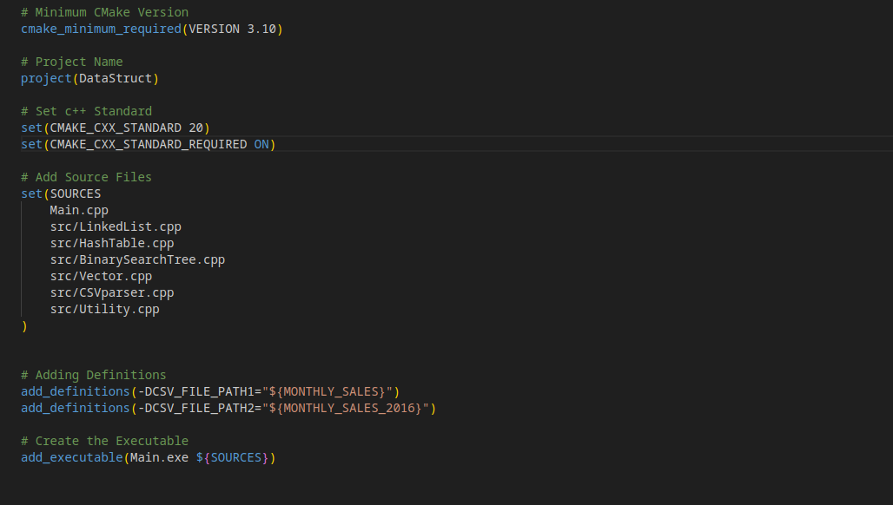

Assessing the artifact
In this enhancement, I wanted to further my knowledge from my data structures and
algorithms class.
In this class, we did not have a final project that dealt with programming data structures.
I chose to take 3 different assignments that dealt with different data structures. Specifically,
vectors, linked lists, and hash table.
Originally, I wanted to compare the binary search tree, but I then remembered that the data is
sorted upon entry.
For this enhancement, I chose to take all three of the data structures and their files
and insert them into one folder.
After this, I made a main.js for managing user input via the terminal.
Creating the sorting algorithms
After combining the files for the application. I needed to create sorting algorithms for
each of the data structures.
This was simple for the vector and linked list. However, when it came to the hash table, it got
slightly complicated.
The way that I dealt with collisions in the table was by placing them into a linked list.
Therefore, each index of the hash table had a head node, if another item came in with the same
node it would be placed after.
With the sorting algorithms, I needed to sort each of these linked-list-like structures
Slight detour for Cmake
At this point in the project, I was realizing just how long it would take for me to
recompile everything in between tests.
There were far too many files to type out (g++ Wall -O etc. etc.). That's where I learned how
CMake could help me with this problem.
Through this I was able to specify everything in my cmake.txt files and use CMake and Make, then
my project was ready to go.

Testing and recording
Once the algorithms had been created for each data structure.
It was time to implement a counter that would count the number of ticks elapsed over the sort. I
accomplished this by using the Clock class.
I would do this by initializing a clock before with the time, then after sorting I would
initialize a new clock and subtract the time from before.
This would give me the proper time elapsed in ticks.
Finishing touches
Now that I had recorded all the data I needed, it was time to report on it. I could have
just used Google sheets or Excel.
However, I remembered using LaTeX in my linear algebra class and wanted a refresher on how to
use it. I decided to make a bar graph to represent the data.
In the end, the vector was by FAR the slowest data structure for sorting. This has
surprised me since I thought the linked list would be close.
On average, the vector took ~0.09 seconds to sort, the linked list ~0.075 and the hash table
~0.025. In fact,
I was surprised the hash table had a very consistent runtime across all three sorting
algorithms.